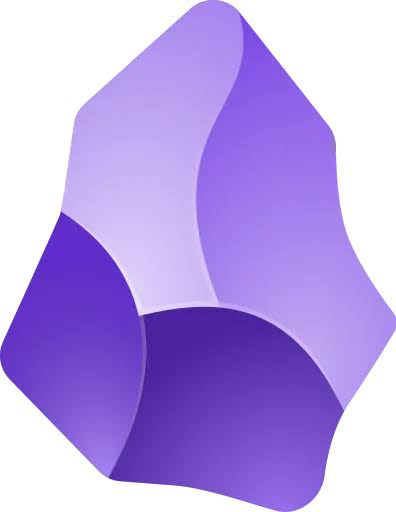

How I built my notes to be found — powered by Obsidian
A note-taking app is only as good as getting information back out.
The app makes you adapt to its structure — not the other way around.
So if you don't already remember where you filed it, you will never find it again.
The raw materials

Obsidian — a free, local-first note-taking app.
Markdown is just text with light formatting marks — no proprietary format, no lock-in, opens in literally anything.
# Heading **bold** - list item
- [ ] checkbox > [!callout]
Type [[note name]] and two notes are linked.
No folder decision required — every link is a small act of retrieval, waiting for later.
Add #tag to further connect the concepts.
Every note can carry properties — simple key : value pairs at the top of the file (YAML frontmatter).
Same shape every time → easy to filter and query later.